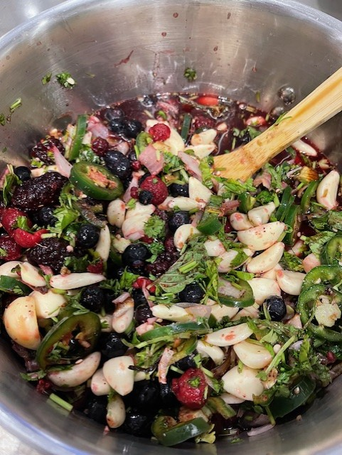
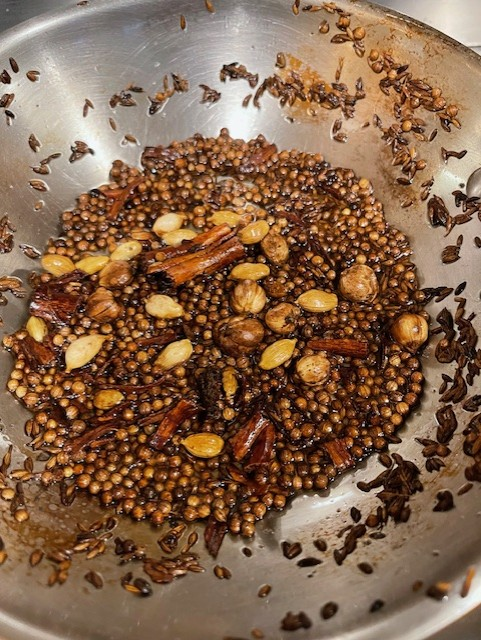

Hercule's Observing

Hercules observing the cooking process
Hercules, keeps a close eye on manufacturing
Hey there everybody, i'm Ali and my sidekick is Hercules, i wear a lot of hats in life. My favorite hands-down is being a chef specializing in flavor mixes and sauces. I'm enclosing several videos of a sauce prep i did for a 16 hour, curried fig, red wine cocoa reduction, with olives. Without going too much into the actual construction; i thought it would be fun to see some of the flavor complexity and creation of elements. And yes the finished product will be brought in to try.

After preparation, this mix produces a spicy, fresh and vibrant element into a finished product. A mix of garlic, ginger, spices, fresh herbs and acids.

A spice mix containing many of the background flavors needed for this sauce. In this mix, we have cardammom, fennel, coriander, cumin, chili flakes and cinammon
This is one of the flavor elements being prepared for the fig based sauce. Several are combined together and blended for the final product.
This video shows a black mission fig construction with garlic, lime, red wine and cocoa.
In total, 6 flavor elements like the two above were created to be added to the final blending. In this video, we see the development of the red wine, cocoa reduction base.(at this point it had been bubbling for 4 hours)
This video show the base, at 14 hours before the addition of the 6 flavor components.
My sweet boy doesn't approve of having a drink unless he gets to try some
Hercules, keeps a close eye on manufacturing
I've always had a passion for balancing flavors, creating elements and adding them into a matrix is amazing work i would love to team up with a group and created a database of flavors to custom create sauces based on pre-made flavor elements; such as the ones demonstrated above. Living a busy life, it can be a real challenge to show my creativity and passions, i love playing with spices and flavors.